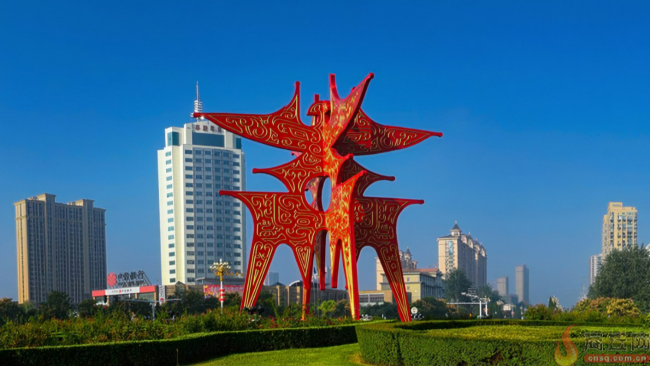
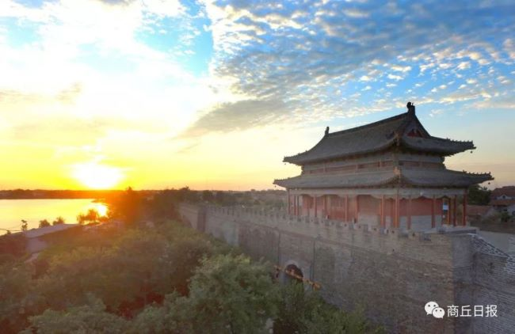

家乡：河南省，商丘市
December 9th, 2016 , Posted by Zihao Yan
商字是商丘市的城市地标，坐落在河南省商丘市睢阳区神火大道与南京路交汇处中的环岛内，雕塑高21米、横向跨度22米，屹立在2500平方米的环岛上，建成于1997年6月29日。
商丘古城
December 9th, 2020 , Posted by ShangQiuRiBao
商丘古城已有四千多年历史 [4] ，现存地上的归德府城于明朝弘治十六年（公元1503年）破土动工，历时八载，于明朝正德六年（公元1511年）竣工，距今已有500余年的历史。现存归德府城之下同时叠压着明朝弘治十六年之前元朝时期修建的归德府城、北宋时期的应天府南京城、 [38] 隋唐时期的宋州治所宋城、秦汉时期的梁国国都睢阳城、周朝时期的宋国都城等6座都城、古城。商丘古城是当今世界上现存的唯一一座集八卦城、水中城、城摞城三位一体的大型古城遗址。
